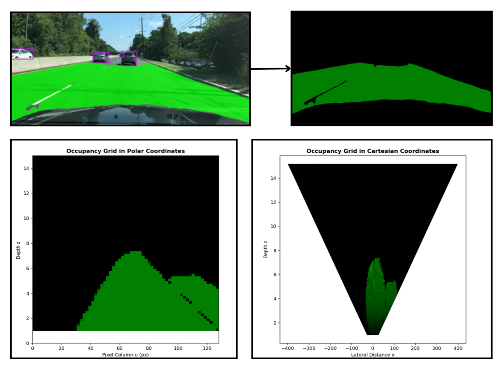
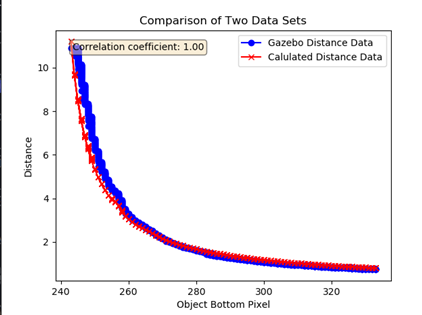

Drivable Area Segmentation Model on COTS Device
COTS Mobile Application - Real-time Inference Demo
📝 Executive Summary
This project focuses on developing an Android-based mobile application that
performs real-time
segmentation and monocular depth estimation to identify drivable areas
and execute path-planning
algorithms directly on commercial off-the-shelf (COTS) devices such as smartphones.
By leveraging
the onboard sensors and computational capabilities of Android devices, the system enables
fully
local perception and planning without external compute units.
The ultimate goal is to establish an
Android smartphone as a standalone sensor and processing unit for mobile robotic
platforms, reducing
system cost, complexity, and power consumption.
🎯 Key Features
- Monocular Depth Estimation: Implemented using Gazebo simulation, OpenCV, and the TurtleBot image plugin.
- On-device Segmentation: Integrated a TFLite-based drivable area segmentation model into the mobile application.
- Simulation-to-Deployment Pipeline: Validated perception algorithms in Gazebo before mobile deployment.
- Edge Processing: Enabled real-time perception and decision-making directly on COTS devices.
⚙️ Drivable Area Segmentation

📊Inference Graph

🚩 Results
Predicted vs. actual TurtleBot distances show a correlation coefficient of 1.0.
Free space visualized using polar occupancy and Cartesian grids via
YOLO_P.
FFNet-40S (quantized) inference time: 1000–1500 ms.